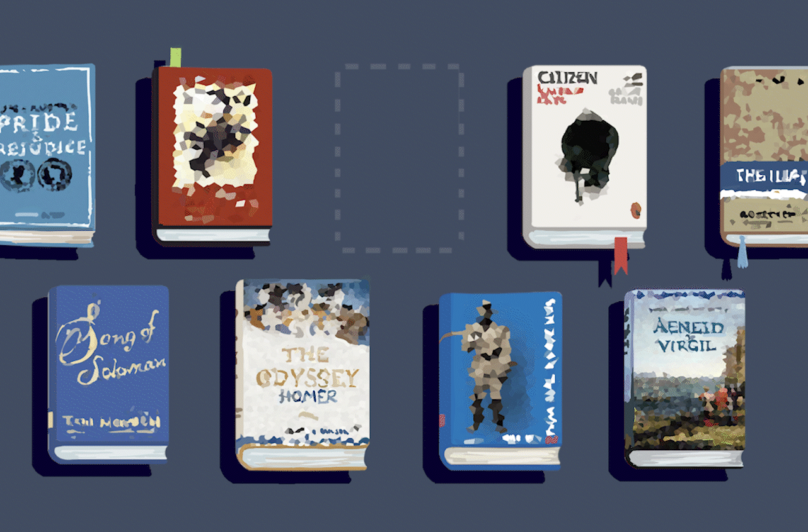

Writing
University News Senior Staff Writer at the Columbia Daily Spectator.
Selected work

Articles
April 1, 2025
March 24, 2025
March 11, 2026
March 9, 2026
March 4, 2026
February 16, 2026
February 11, 2026
February 4, 2026
December 23, 2025
December 8, 2025
Honorable Mention, Stuart Karle Prize for Outstanding Journalism
December 4, 2025
November 11, 2025
October 23, 2025
October 12, 2025
June 30, 2025
May 8, 2025
May 5, 2025
April 8, 2025
April 3, 2025
March 10, 2025
February 18, 2025
February 13, 2025
December 8, 2024
November 10, 2024
October 30, 2024
October 21, 2024
October 17, 2024
October 14, 2024
September 25, 2024
Competition writing
Beyond Grants: Reimagining How We Fund Research
This proposal argues that U.S. research is being strained by unstable public funding, with private-sector investment often unable to fill the gap for long-term or politically sensitive work. It proposes a market-inspired funding platform that would let individuals and businesses invest in curated groups of research projects, broadening participation in science without compromising scientific independence.
Read essay